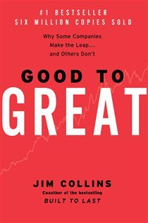

Library › Business & Startups
Good to Great — Summary & Key Lessons

Why some companies make the leap and others don't — five years of research on what separates great from merely good.
📖 OPEN THE FULL INTERACTIVE BREAKDOWN →🌐 Read it in Hindi, Hinglish, Gujarati, Tamil & 22 more languages — free, with audio.
💡 The Big Idea
Collins's team spent five years studying 1,435 companies to find the few that went from average to sustained greatness (beating the market 3x+ for 15 years) — and what separated them from identical competitors who stayed mediocre. The findings dismantled business mythology: the great companies were NOT led by celebrity saviors but by 'Level 5' leaders — personally humble, professionally fanatic — who got the right people on the bus BEFORE deciding where to drive it, confronted the most brutal facts of their reality while never losing faith (the Stockdale Paradox), and distilled strategy to one 'Hedgehog Concept' at the intersection of passion, potential world-best, and economic engine. There was no single miracle moment — greatness accumulated like pushing a giant flywheel, turn upon turn, while the comparison companies lurched between doom loops of new saviors and new strategies. The disciplines compound; the drama doesn't.
🧠 The 6 Key Lessons
Lesson 1: Level 5 Leadership: The Window and the Mirror
Chapter 2: Level 5 Leadership
Every single good-to-great company was led by the same unexpected type: leaders with a paradoxical blend of extreme personal humility and ferocious professional will. They were 'more plow horse than show horse' — often described as quiet, shy, self-effacing — yet utterly ruthless about results, willing to fire family members or sell the company's founding business if the mission required it. Their signature habit: the Window and the Mirror. When things went well, they looked out the WINDOW to credit others, luck, and circumstance; when things went badly, they looked in the MIRROR and took responsibility. The comparison companies' celebrity CEOs did the exact opposite — and their companies collapsed when they left, because charisma isn't a system. Level 5s built companies that got MORE successful after their exit: the ultimate scoreboard.
📖 Example: Darwin Smith, CEO of Kimberly-Clark — a shy lawyer who never lost his awkwardness, vacationed by digging holes on his Wisconsin farm, and was told by a director he 'wasn't qualified' for the job. Over 20 years this unqualified man made the hardest call in… Read the full example →
⚡ Do this: Practice the Window and the Mirror for one week: every win, name out loud the people and luck that contributed; every setback, state specifically what YOU will do differently. Notice how differently your team starts behaving around you.
Lesson 2: First Who, Then What: The Bus Before the Destination
Chapter 3: First Who... Then What
Conventional wisdom: set the vision, then recruit people to execute it. The great companies inverted it: get the RIGHT people on the bus, the wrong people off, and the right people in the right seats — and THEN figure out where to drive. Because if you have the right people, they'll adapt to any destination change, self-motivate, and self-manage; and if you have the wrong people, the perfect vision doesn't matter — you'll spend your energy managing them instead of the mission. The corollaries are hard: when in doubt, don't hire — keep looking (growth limited by ability to get the right people is the ONLY safe bottleneck); when you know a people change is needed, act — every month of hoping costs the best people's respect; and put your best people on the biggest OPPORTUNITIES, not the biggest problems.
📖 Example: Wells Fargo in the 1970s knew banking deregulation was coming but couldn't predict its shape. CEO Dick Cooley's strategy was pure 'first who': hire the most talented people available whenever found, often with no specific job in mind — 'That's how you build… Read the full example →
⚡ Do this: Draw your bus: list the 5-7 people your work most depends on. Mark each: right person/right seat, right person/wrong seat, or wrong person. Act on ONE marking this month — a move, a hard conversation, or a search for an upgrade.
Lesson 3: The Stockdale Paradox: Faith AND Brutal Facts
Chapter 4: Confront the Brutal Facts
Admiral James Stockdale survived 8 years of torture as the highest-ranking POW in Vietnam. Collins asked him who didn't survive. 'That's easy — the optimists. The ones who said ‘we’ll be out by Christmas,’ and Christmas came and went, and Thanksgiving, and then it was Christmas again. They died of a broken heart.' Stockdale's survival formula — never confuse faith that you'll prevail in the END (which you can never afford to lose) with the discipline to confront the most brutal facts of your CURRENT reality (whatever they are) — is the psychological engine of every good-to-great company. They built cultures where truth gets heard: leading with questions not answers, engaging in debate not coercion, conducting autopsies without blame, and building 'red flag' mechanisms that force unfiltered information upward before it's too late.
📖 Example: In the 1950s, A&P and Kroger were near-identical grocery giants sitting on the same brutal fact: their small, old-format stores were dying as customers wanted superstores. Kroger confronted it — accepting that the model that made them rich was doomed — and… Read the full example →
⚡ Do this: Schedule a 'brutal facts' session this month: list the three most uncomfortable truths about your business/career that you've been managing around. For each, write what you would do if you fully accepted it as true — then do the first step of one.
Lesson 4: The Hedgehog Concept and the Flywheel
Chapters 5-8: Hedgehog Concept, Discipline, Flywheel
The fox knows many things; the hedgehog knows ONE big thing. Great companies are hedgehogs: they distill strategy to a single organizing concept found at the intersection of three circles — what you can be THE BEST IN THE WORLD at (not what you want to be best at — what you demonstrably can be), what drives your ECONOMIC ENGINE (the one ratio, profit-per-X, that best captures your model), and what you are DEEPLY PASSIONATE about. Anything outside the intersection gets a disciplined 'no' — including huge opportunities. Then comes the flywheel: no dramatic launch, no miracle moment — just consistent pushes in one direction, each turn building on the last, until momentum becomes unstoppable. The comparison companies rode the DOOM LOOP instead: new CEO, new strategy, dramatic program, disappointing results, repeat — decades of motion, zero momentum.
📖 Example: Walgreens — a boring drugstore chain — beat the market 7x from 1975-2000, outperforming even GE and Intel. Its hedgehog: best in the world at CONVENIENT drugstores, measured by profit per customer VISIT (not per store — that insight changed everything,… Read the full example →
⚡ Do this: Draft your three circles: (1) what you could realistically be best in your market at, (2) your profit-per-X metric, (3) what you'd do obsessively for free. Write the one-sentence intersection — then list two current activities OUTSIDE it to stop this quarter.
Lesson 5: Confront the Brutal Facts (Yet Never Lose Faith)
Part 2: The Culture
The Stockdale Paradox named for the POW who survived years of torture: 'You must never confuse faith that you will prevail in the end with the discipline to confront the most brutal facts of your current reality.' Great companies do both simultaneously — they look unflinchingly at their weaknesses, their threats, their ugly numbers, and they keep absolute faith that they will emerge stronger. Collins found this dual posture in every great-to-good company: meetings where bad news was welcomed, where the question 'what do we know that we don't want to know?' was asked aloud. The culture that hides bad news dies of it; the culture that confronts it survives it.
📖 Example: Collins describes how the great companies' leadership reviewed brutal market data without flinching — one CEO publicly admitted his company's product was inferior and reorganized around the fact. The honest confrontation, not the rosy vision, is what made… Read the full example →
⚡ Do this: Hold a 'brutal facts' session this week: ask yourself and your team, 'What do we know that we don't want to know?' — and write down the honest answer without sugarcoating.
Lesson 6: The Culture of Discipline: People Who Don't Need Managing
Part 4: The Discipline
Collins' fourth circle: great companies replace the hierarchy of rules with a culture of discipline — rigorous people who do their jobs excellently without being watched, within a framework of freedom and responsibility. The distinction is crucial: disciplined people don't need bureaucracy, and bureaucracy can't replace disciplined people. The leaders' role shifts from policing to coaching, from control to clarity — hire self-disciplined people, agree on the framework, and then get out of the way. The result is a company that is both rigorous and flexible, with the discipline to say no to distractions and the freedom to move fast. Discipline is the bridge between ambition and results.
📖 Example: Collins contrasts companies with thick rulebooks and companies with thin ones: the great ones had the thin books because their people didn't need the rules — the culture of self-discipline made the manual unnecessary, and the absence of bureaucracy made them… Read the full example →
⚡ Do this: Identify one rule or approval you impose on others that exists only because you don't trust their discipline. Replace it with a clear standard and remove the control.
✅ 5-Step Action Plan
- Practice Window/Mirror: credit outward on wins, own inward on losses — daily.
- Audit your bus: identify one wrong-person or wrong-seat situation and act within 30 days.
- Hold a brutal-facts session monthly; protect whoever brings the worst news.
- Write your Hedgehog Concept (best-at ∩ economic engine ∩ passion) and say no to everything outside it.
- Pick your flywheel: one direction, consistent pushes, no savior programs — measure momentum quarterly.
⚠️ When This Doesn't Work
Collins' 'good to great' hedgehog is the most cited business framework of its era — and Circuit City was one of the book's certified great companies, a hedgehog that knew exactly one thing deeply: big-box electronics retail. Ten years later it was bankrupt, because the world changed and the hedgehog's 'one thing' became the wrong thing. Collins' framework measures past greatness and quietly assumes the future resembles it. The book's real lesson, which it underweights, is that greatness is a condition that requires renewal, not a status you achieve — and the hedgehog that doesn't re-examine its one thing becomes roadkill.
💀 The Graveyard Proves It
🔌 Circuit City — Fired Its 3,400 Best Salespeople to Save Money. Burn: 567 stores, 34,000 jobs, $12B company. Read the full case study →
💬 Best Quotes from Good to Great
- “Good is the enemy of great.”
- “Great vision without great people is irrelevant.”
- “Retain absolute faith you will prevail in the end — AND confront the most brutal facts of your current reality.”
Interactive version: mark lessons as read, listen in your language, share quote cards.